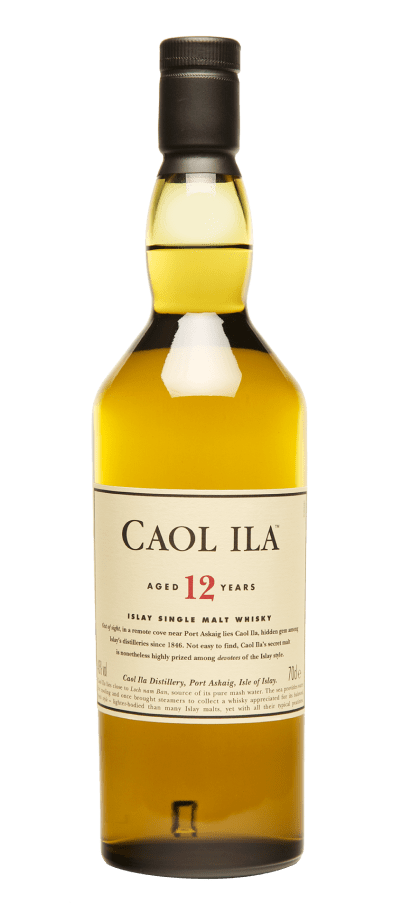

Là 1 trong 3 chất vị lâu đời và quý giá nhất của bộ sưu tập “The Singing Stills”
ra mắt vào năm 1971, Mortlach 47 Y.O được giới chuyên môn đánh giá là dòng
single malt whisky bùng nổ nhất vùng Scotland. Với đặc tính chân thực, whisky
mang đến chất vị mượt mà như nhung với hương mật ong, gỗ cháy và sô cô la đen để
lại kết cấu mịn như bơ, và kết thúc với một chút khói. Vô cùng quý hiếm, sản
phẩm được sản xuất với chỉ 94 chai trên thế giới.


tiếng vọng đại dương
Thừa hưởng không khí mặn ven biển tại Islay, Caol Ila 25 Y.O quyến
rũ
ngay từ mùi không khí biển trong lành và ngọt ngào thoảng hương trái
cây. Whisky tạo nên phức hợp cân bằng giữa các đặc tính khói đặc
trưng
và vị ngọt tinh tế của thảo dược. Đậm vị gỗ sồi, khói, dầu, than bùn
và
lúa mạch, whisky kết lại cuộc hành trình cảm xúc với hương thảo mộc
kéo
dài, khá khô và nhiều vị khói, tạo ấn tượng dễ chịu.
bản hòa ca đối lập
Caol Ila được xem như “bản hòa ca thanh thoát và sâu sắc” của hoa
bia, đinh hương, cỏ ướt và chút cá xông khói. Trưởng thành trong
thùng gỗ sồi Mỹ, Caol Ila 18 Y.O thoảng mùi thơm và hắc của thảo
dược, thực vật, cỏ và mạch nha dạng kem. Sau vị ngọt thanh của thảo
dược, whisky áp đảo vòm họng với gỗ sồi, khói, dầu, than bùn và lúa
mạch, để lại hậu vị thảo mộc kéo dài, đượm hương khói nhẹ nhàng.

thanh âm islay
Theo phong cách Islay cổ điển, Caol Ila được làm chủ yếu bằng mạch
nha ngấm qua than bùn. “Ma thuật” của Caol Ila nằm ở ảnh hưởng của
phenol lên tầng vị cuối cùng trong dòng rượu vàng đượm như ô liu.
Caol Ila 12 Y.O khởi đầu với hương cam chanh và hạt hạnh nhân, xâm
chiếm vòm họng với vị than bùn, thoảng mùi dầu ô liu, kết lại với
than bùn và cam chanh chính là sự lựa chọn khai vị tuyệt hảo hơn bao
giờ hết.
phức hợp ngọt ngào

Được ví như một nàng thơ đang độ tuổi xuân thì, rực rỡ tươi mới với
sự ngọt ngào mê đắm, Glenkinchie 12 Y.O tỏa ra mùi thơm nhẹ mũi với
chút mạch nha lúa mạch, hạnh nhân, quả phỉ và mật ong manuka. Chất
vị đậm đà từ trái cây cùng với trái cây hầm, rượu tráng miệng, vỏ
táo và mật ong khơi gợi mọi giác quan, và cuối cùng kết lại ở hậu vị
dài vừa thoảng hương vị của lúa mạch và cỏ mới cắt.
chất vị thời gian
Pittyvaich 28 năm tuổi là một trong những loại whisky hiếm nhất hiện
nay, với chỉ 4.680 chai trên toàn thế giới. Việc thưởng thức
Pittyvaich 28 Y.O đòi hỏi sự kiên nhẫn nhất định, bởi phải mất một
ít thời gian để từng nốt hương vị tuyệt vời bùng nổ và lan toả. Từ
hương mạch nha ngọt ngào, đến hương bánh táo nướng, bánh gừng,
thoảng hương tiêu nhẹ nhàng, vị cam chín nổi bật đi cùng vị cay của
quế, mở đường cho vị bánh táo, hạnh nhân, dừa nướng và vị the mát
của bạc hà. Hậu vị nhẹ nhàng với vị bánh táo và điểm xuyết hương
khói.
đam mê dũng mãnh
Oban là một trong những nhà chưng cất whisky nhỏ và lâu đời nhất
Scotland, nằm giữa thị trấn bên vách núi cheo leo và biển cả. Oban
21 Y.O mang đến trải nghiệm đa hương vị tuyệt vời: ngọt ngào của cam
chín, pha chút mặn mà của muối biển, ngọt thơm của mật ong, the mát
bạc hà, béo ngậy dừa nướng và cacao, cay của hoa hồi được làm tròn
bởi hạt dẻ, và cuối cùng là hậu vị kéo dài với hương cam đặc trưng.
Đây chắc chắn là món quà tuyệt vời cho những tâm hồn mê phiêu lưu và
khát khao chinh phục.
cổ điển đích thực
Một khu nghỉ mát nhộn nhịp bên bờ biển đã mọc lên xung quanh nhà máy
chưng cất trong 2 thế kỷ kể từ khi nó được xây dựng lần đầu tiên ở
thị trấn Oban. Loại mạch nha West Highland đến nay vẫn được sản xuất
theo kiểu truyền thống không qua tẩm sấy, và chai Oban 14 Y.O này là
một loại rượu whisky cổ điển từ nhà chưng cất. Đây là sự lựa chọn
tuyệt vời cho những ai yêu thích các loại rượu mạch nha tươi mát có
khói.
Hotline CSKH
+84 902 152 777